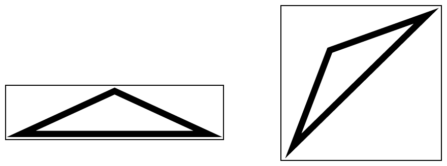

The 2000 ACM Programming Contest World Finals sponsored by IBM · Problem D
WrapIt.com specializes in wrapping gifts. Started several years ago as a service offered to local department stores and malls, today WrapIt serves customers world-wide and boasts that it can package anything from half-carat diamonds to whole apartment blocks.
WrapIt has found that some customers prefer their gifts to be wrapped in the smallest possible packages, whereas others prefer large packages that make their gifts seem larger than they really are. The company needs a program that computes the smallest and largest rectangular package into which a gift can be “tightly” wrapped. Since this is a difficult problem, the company will initially settle for a two-dimensional version of the program.
Each gift is approximated as a simple polygon, and all packages are represented by rectangles. A gift is said to “fit tightly” in a package if the gift touches all four sides of the package. The figure below shows how a triangular gift might fit tightly in two packages of different sizes. For each gift, your program must compute the areas of the smallest and largest packages into which the gift can fit tightly.

The input contains several gift descriptions. Each description begins with a line containing an integer n (3 ≤ n ≤ 100), which is the number of vertices in the polygon that represents the gift. The following n lines contain pairs of integers that represent the coordinates of the polygon vertices, in clockwise order. Each polygon will have a non-zero area and will not intersect itself.
The input is terminated by a line containing the integer 0.
For each gift, first print the number of the gift. Then on separate lines, print the minimum and maximum areas of the packages into which the gift fits tightly, using the format in the sample output. Print a blank line after each test case. The computed areas should be exact to three digits to the right of the decimal point.
3 -3 5 7 9 17 5 4 10 10 10 20 20 20 20 10 0
Gift 1 Minimum area = 80.000 Maximum area = 200.000 Gift 2 Minimum area = 100.000 Maximum area = 200.000